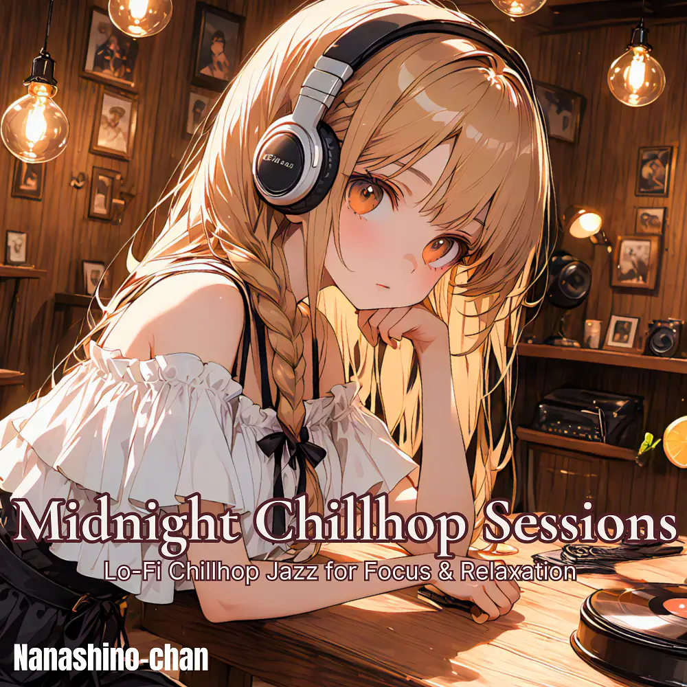

Lo-Fi · Chillhop · Jazz
Warm Vinyl Sessions: Lo-Fi Chillhop Jazz
Nanashino-chan
Explore Warm Vinyl Sessions: Lo-Fi Chillhop Jazz by Nanashino-chan: 20 instrumental tracks spanning Lo-Fi / Chillhop / Jazz. Start with Moonlight Entrance / Velvet Brew, preview the collection and find your favorites on streaming services.
2025-08-15 · Released · 20 tracks · Instrumental
Preview the album
The jacket stays here until you choose a track. Playback uses YouTube.
YOUTUBE PREVIEW
Choose a track to listen
The jacket stays here until you choose a track. Playback uses YouTube.
If playback is unavailable, open the album or track on the streaming service.
Find this album on streaming services
Links marked “search” open search results. Select the album or track on the service.
Track list 20
- 01Moonlight Entrance
- 02Velvet Brew
- 03Gentle Echoes
- 04Dimly Lit Dreams
- 05Urban Serenade
- 06Smoky Skyline
- 07Coffee & Vinyl
- 08Midnight Chords
- 09Calm After Dark
- 10Lazy Horns
- 11City Reflections
- 12Broken Neon Signs
- 13After Hours Walk
- 14Lo-Fi Candlelight
- 15Rain on Rooftops
- 16.Slow Groove Alley
- 17Lost in Transition
- 18Soulful Static
- 19Worn Tape Memories
- 20Last Orders at the Bar
Find a sound for your next post
Copy “Nanashino-chan + track title” and paste it into your social app’s music search. Availability depends on your region and account. Copying the name does not grant usage rights.